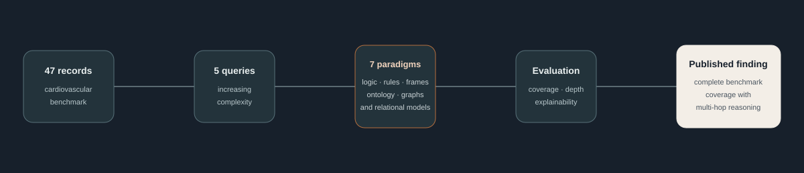

Knowledge Representation for Healthcare Systems
A comparative study of seven knowledge-representation paradigms for healthcare question answering, evaluated on a benchmark designed around increasing reasoning complexity.
Research design
The work establishes a unified comparison so that different representations can be examined against the same underlying healthcare knowledge and query set. The CV identifies query coverage, reasoning depth, and explainability as the main comparative dimensions.

The benchmark
Risk reasoning involving chest pain and smoking history.
Risk reasoning involving age and hypertension across patients.
Cardiovascular risks involving diabetes and obesity.
Treatment-guideline applicability under multiple comorbid conditions.
Intervention suggestions for patients with literature-similar comorbidities.
What the study reports
The published comparison reports that Knowledge Graphs achieved complete benchmark coverage, including multi-hop and contextual reasoning, alongside path-based explainability. This is a result within the study’s benchmark; it is not presented here as a claim of clinical deployment or universal superiority.